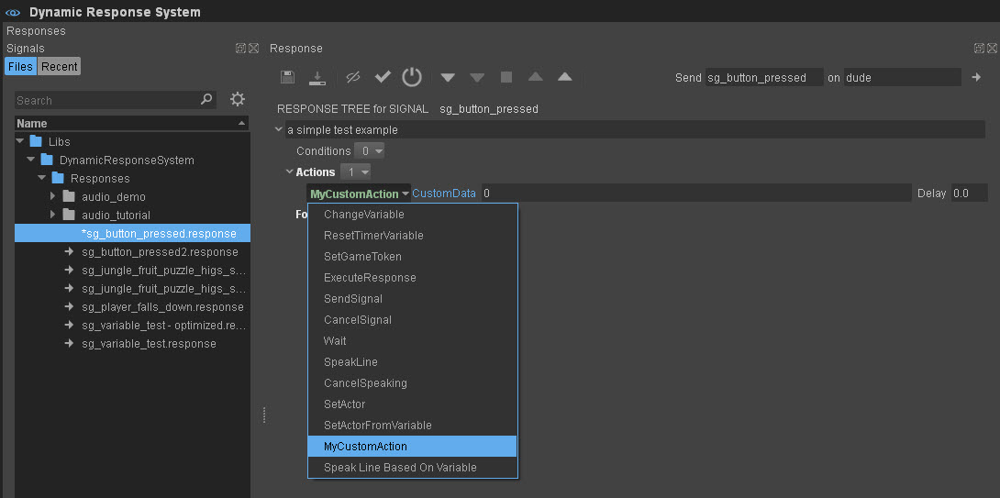
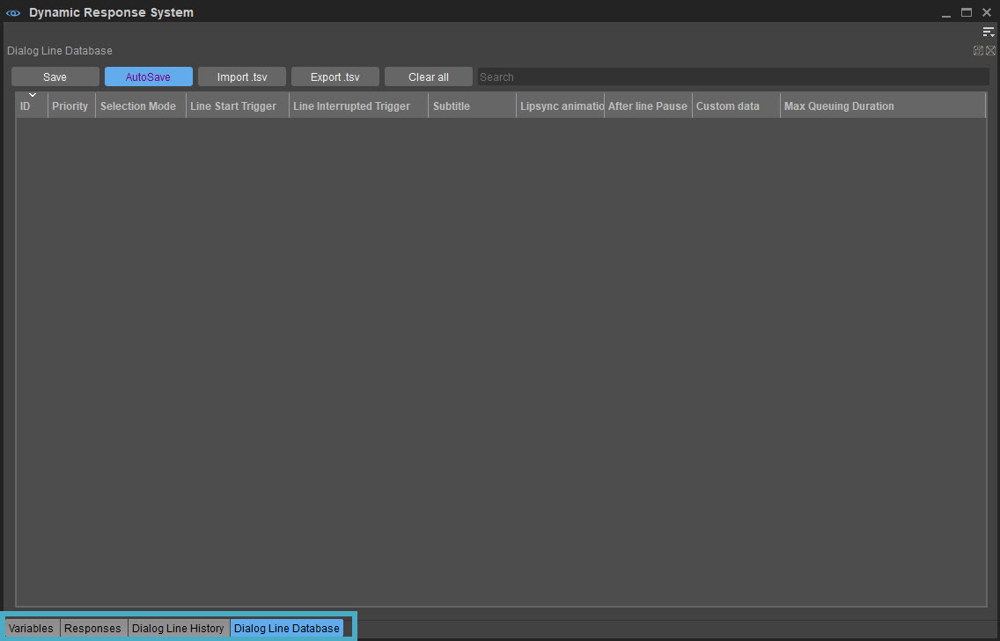

Note: You should read the “DRS Concept" page first, to get a basic knowledge on DRS functionality.
Overview
One of the main goals for DRS is to reduce the amount of work for programmers to have interesting dialogs to be played in the game. They should provide input to the DRS, by sending signals whenever something potentially interesting is happening and should expose game data that might be interesting through variables. The general idea is to simply provide these things to the narrative designers, and not wait for them to request it. Of course there will be requests for specific signals coming from the narrative designers, but as a rule of thumb, just add signals whenever you think it might be useful. The process of sending a signal is really fast, so don’t worry too much about it (obviously you still don’t want to spam thousands of them every frame).
Probably at the beginning of the projects, it might be needed to implement game-specific actions and conditions, the DRS provides the default actions and conditions. But if your game needs custom inputs, you can just implement your own and register them to the DRS so that the narrative designerss can use them.
Important Interfaces
Unless you want to start writing your own actions/conditions, there are mostly only two DRS interfaces of interest for you, DRS::IResponseActor (for setting local variables and sending signals) and DRS::IVariableCollection (for setting global/context variables).
How to Send Signals
You always send a signal to a specific actor, there is no broadcasting. So if the event is linked to an entity just fetch the DRS-Entity-Proxy first, using the below mentioned code:
IEntityDynamicResponseProxyPtr pDrsProxy = crycomponent_cast<IEntityDynamicResponseProxyPtr>(pEntity->CreateProxy(ENTITY_PROXY_DYNAMICRESPONSE))You can find the QueueSignal function on the Proxy. There are only three parameters:
- Signal name (a string, but you should really choose a meaningful name here, because there is currently no other description given to the narrative designers what this signal is supposed to mean).
- ContextVariable collection (if you need to pass additional data along with the signal, detailed description available in next chapter). This is an optional parameter.
- ISignalListener, an optional parameter. You can add yourself as an listener to the processing of this signal. This way you will be informed of when the processing starts and ends.
To handle general signals which are not linked to an entity, you need to create a Game dummy actor using the below code. It is up to you to choose an actor to which you can send general signals like sg_game_started.
DRS::IResponseActor* pDrsGameActor = gEnv->pDynamicResponseSystem->CreateResponseActor("Game");For example, you can also use the player and send the general signals to him.
Now, you can send the signal to the actor and the narrative designers might link a response to it (or maybe they even already created one, in this case you might already see or hear a reaction).
Remember that the narrative designers can also change the active actor in the response, for example, even when you send the signal sg_door_opened on the player, it could still cause the NPC1 to comment on this event.
How to Set Variables
Step 1: Obtain the variable collection which contains the variable.
As you already have read, there are three different variable collections, global, local and context. Each of these collections that you obtain is slightly different.
If you want to add or change a global variable (A variable in a global collection), you can obtain the variable collection using the below code:
DRS::IVariableCollection* pGlobalVariableCollection = gEnv->pDynamicResponseSystem->GetCollection(collectionName);Or if you need to create a new collection, you can call the below code:
gEnv->pDynamicResponseSystem->CreateVariableCollection(collectionName);If you want to create or change a local variable just fetch the local variable collection from the DRS Actor.
IEntityDynamicResponseProxyPtr pDrsProxy = crycomponent_cast<IEntityDynamicResponseProxyPtr>(pEntity->CreateProxy(ENTITY_PROXY_DYNAMICRESPONSE))
DRS::IResponseActor* pActor = pDrsProxy->GetResponseActor();
DRS::IVariableCollection* pLocalVariableCollection = pActor->GetLocalVariables();Every Actor has a local collection, so no need to ever create a local collection.
For Context variables that you want to pass along with a signal you simply create a new VariableCollection similar to the code below:
DRS::IVariableCollectionSharedPtr pContextVariableCollection = gEnv->pDynamicResponseSystem->CreateContextCollection();It’s a shared pointer, because the DRS will release it when it’s done with the signal processing.
Step 2: Get/Create the variable and change its value
In all variations, you will receive the IVariableCollection (Shared) Pointer. On this object, you can find the functions CreateVariable and SetVariableValue. These functions take the name of the variable and the new values (int, float, bool, and string (hashed)). For example:
pVariableCollection->SetVariableValue("Health", 0.4f);
pVariableCollection->CreateVariable("MaximumHealth", 2.0f);Note: If you know that you want to change the variable on a regular basis, you should cache a pointer to the variable. You receive this pointer by calling GetVariable() on the variable collection, this saves you from re-fetching the variable every time you want to change the value.
DRS::IVariable* pVariable = pCollectionToUse->GetVariable("AmmoLeft");
pVariable->SetValue(66);Custom Actions
You can add your own actions to the DRS, so that narrative designers and content integrator can use them in their responses. You can find examples on how to do it in the GameSDK. You just need to derive your custom action from DRS::IResponseAction and implement the virtual functions (Execute, GetType and Serialize), and then register your class in the DRS using the macro REGISTER_DRS_CUSTOM_ACTION.
Example:
class CMyCustomAction final : public DRS::IResponseAction
{
public:
//////////////////////////////////////////////////////////
// IResponseAction implementation
virtual DRS::IResponseActionInstanceUniquePtr Execute(DRS::IResponseInstance* pResponseInstance) override
{
IEntity* pEntity = pResponseInstance->GetCurrentActor()->GetLinkedEntity();
//TODO: start your custom action
//if your action is finished right away, you dont need a ResponseActionInstance and you can simply return a nullptr here.
//else you have to return a UniquePtr to a new actionInstance, which will be updated by the DRS until your update-methode does not return CS_RUNNING anymore.
return DRS::IResponseActionInstanceUniquePtr (new CMyCustomActionInstance());
}
virtual void Serialize(Serialization::IArchive& ar) override
{
//serialize all data that your action needs
ar(m_yourData, "customData", "^CustomData");
//Remark: This method is used to serialize to/from file and also to/from editor UI
//more infos about the Serialization Library: http://docs.cryengine.com/display/CEPROG/Serialization+Library
}
virtual const char* GetType() const override { return "MyCustomAction"; } //only used in the editor, for logging
virtual string GetVerboseInfo() const override { return CryStringUtils::toString(m_yourData); } //only used in the editor, for extended logging
//////////////////////////////////////////////////////////
private:
int m_yourData;
};
//////////////////////////////////////////////////////////////////////////
//only needed when your action needs to be updated or the user of the action is interested in when the action has finished:
class CMyCustomActionInstance final : public DRS::IResponseActionInstance
{
public:
//////////////////////////////////////////////////////////
// IResponseActionInstance implementation
virtual eCurrentState Update() override { /*TODO check if your custom action has finished. The DRS will call update as long as you return CS_RUNNING*/ };
virtual void Cancel() override { /*TODO cancel your custom action */ }
//////////////////////////////////////////////////////////
};
[...]
//somewhere else in code, register the action (game.cpp/init for example)
REGISTER_DRS_CUSTOM_ACTION(CMyCustomAction);Result:
Your new custom action can be used just like any other action.

Custom Conditions
Similar to the custom actions, you can also implement your own conditions. You need to derive the conditions from DRS::IResponseCondition and register with REGISTER_DRS_CUSTOM_CONDITION.
Debug Windows
If you want to check your signals are sent correctly and your variables are set correctly in your game environment, you can check this in the DRS Widget. You can find it in Tools -> Dynamic Response System.
To check signals, go to the Responses tab in the DRS widget. In the Recent tab, you can find a list with all the signals that were recently sent. For more information about this widget, please see Tutorial - Debugging Dynamic Response System Responses.
For viewing the variables, you can simply go to the Variables tab:
